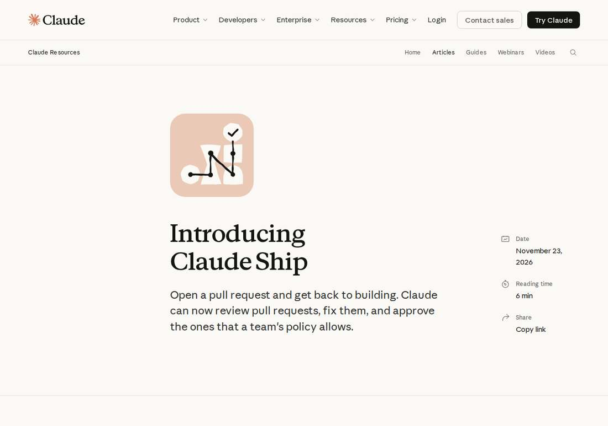

Anthropic Launches Claude Ship, Letting AI Agents Review, Fix and Approve Code Changes
Anthropic launched Claude Ship on November 23, 2026, a suite of AI agents that reviews pull requests, fixes failing checks and conflicts, and approves routine changes under a team-written policy, in beta on Claude Team and Enterprise plans for GitHub. Code Review is already generally available; PR Steward and Claude Approvals are new and in beta.

- 01THE LAUNCH — November 23, 2026: Anthropic announces Claude Ship, available in beta from Monday on Claude Team and Enterprise plans for repositories on GitHub. Reuters carries the launch on its wire at about 20:05 UTC; TechCrunch publishes its report at 22:05 UTC.
- 02THE PRODUCT — Claude Ship has three parts: Code Review, already generally available, which reviews pull requests at Quick, Standard, or Deep levels; PR Steward, in beta, which fixes failing checks, merge conflicts, and review feedback and explains every change with a rollback path; and Claude Approvals, in beta, which approves routine changes under a team-written policy file.
- 03THE PROOF POINT — Anthropic says its own Claude Code team runs Claude Ship on many of its pull requests, where Claude writes most of the code. Merged pull requests more than doubled from June to September while the share reverted fell by more than 40%. Developers can also run /ship from Claude Code on a single change.
WHAT HAPPENEDWhat Happened
Anthropic announced Claude Ship on November 23, 2026, a suite of AI agents that takes a pull request through review, fixes, and an approval decision on GitHub. The company, which began trading on Nasdaq as ANT last week, said the product is available in beta from Monday on Claude Team and Enterprise plans. It combines Code Review, already generally available, with two new agents in beta: PR Steward and Claude Approvals.
PR Steward keeps a pull request green. It jumps in on failing automated checks, merge conflicts, and review feedback from Code Review, other tools, or team members, and after every push it comments with what it changed and how to undo it. It is designed not to approve or merge pull requests on its own. Claude Approvals then applies an approval policy the team writes as a file in the repository, in natural language. It can approve routine changes on its own if the policy allows it, or require deeper human sign-off for certain scenarios, weighing signals such as Code Review findings or the team's own classifiers. Anthropic recommends enabling approvals first in observe-only mode before configuring branch protection to require its green light.
The launch is aimed at the bottleneck that agentic coding created. Code-writing agents now generate large volumes of changes, and human review and approval cannot keep up. Anthropic's own Claude Code team runs Claude Ship on many of its pull requests: on that team Claude writes most of the code, and merged pull requests more than doubled from June to September while the share reverted fell by more than 40%, according to the announcement. Developers can also try it on a single change with a new /ship command in Claude Code, rolling out in Claude Code and the desktop app from Monday. Eligible Claude Enterprise organizations can claim at least $10,000 in Claude Ship credits, to be used within 30 days of claiming, by January 15, 2027. Usage is billed on tokens, and administrators can set spend limits; the product is not available to organizations with Zero Data Retention, the HIPAA configuration, or customer-managed encryption keys.
WHY IT MATTERSThe approval step is the last human gate in agentic coding, and Anthropic is automating it.
Code review was already partly automated; Code Review has been generally available since October. What is new is the decision. Claude Approvals lets a team write its approval rules as a policy file and then lets an agent approve the changes the policy allows, escalating the rest. That moves AI from advising on code to holding merge authority over routine changes, with humans setting the policy rather than reading every diff.
The design shows Anthropic knows how sensitive that step is. Approvals start in observe-only mode, PR Steward cannot approve or merge anything, every change it makes comes with an explanation and a rollback path, and the announcement itself carries the warning that Claude Ship uses AI and may miss bugs, security vulnerabilities, or other issues. The product is a bet that teams will trade a layer of human review for speed, provided the policy file, not the model, stays in charge.
THE WATCHPOINTThe watchpoint is the first real-world failure, not the launch.
Anthropic's internal figures are encouraging but self-reported and drawn from its own team, where the tooling is built and the reviewers are its authors. The honest test is what happens when outside teams run it on unfamiliar codebases: whether PR Steward's fixes introduce regressions, whether approval policies are written loosely enough to let a bad change through, and whether a missed vulnerability surfaces in production.
Two numbers will tell the story. The first is adoption: how many Team and Enterprise organizations turn it on beyond a single repository, and how much of the $10,000 credit offer gets claimed. The second is the first public incident in which an agent-approved change caused a failure, and how Anthropic responds. Until then, the launch is best read as the moment the industry's most-watched coding agent moved from writing code to deciding when code ships.
THE SHIFTWhat Changed
SIGNAL JUDGMENT — ANALYSISAnthropic is moving AI from writing code to deciding when code ships.
Tokenta Signal's judgment: code review was already automated; the approval decision is the new step. Letting an agent approve routine changes under a written policy is the logical end of agentic coding, and Anthropic is the first frontier lab to productize it at scale. The guardrails are real — observe-only mode, no merge authority for PR Steward, policy files in charge — but the honest test is the first agent-approved change that fails in production, not the launch itself.
WHAT REMAINS UNCERTAINWhat Remains Uncertain
EVIDENCEEvidence

Anthropic announced Claude Ship on November 23, 2026: a suite of AI agents that reviews pull requests, fixes failing checks and conflicts, and approves the routine changes a team's written policy allows, in beta on Claude Team and Enterprise plans for GitHub.
PRIMARY SOURCESPrimary Sources
- Anthropic: Introducing Claude Ship
https://claude.com/resources/articles/introducing-claude-ship - Reuters: Anthropic launches Claude Ship to help developers ship code faster
https://www.reuters.com/business/anthropic-launches-claude-ship-help-developers-ship-code-faster-2026-11-23/ - TechCrunch: Anthropic launches Claude Ship, letting AI agents review, fix, and approve code changes
https://techcrunch.com/2026/11/23/anthropic-launches-claude-ship-letting-ai-agents-review-fix-and-approve-code-changes/